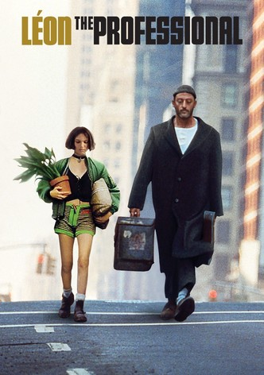

Léon (French: Léon, also known as "The Cleaner", "The Professional", or "Leon the Professional") is a 1994 English-speaking French film written and directed by Luc Besson. The film stars Jean Reno, Gary Oldman, and Natalie Portman in her first leading role;
Leon (Jean Reno) is a cold-blooded assassin living in the Little Italy area of Manhattan, New York. Leon lives an ascetic and gray life, lives in cheap motels and stays away from human society. He devotes most of his time to training and assassinations in the service of an Italian mobster named Tony (Danny Aiello). In his free time he spends in the cinema alone watching old Gene Kelly musicals. One day he meets Mathilda (Natalie Portman), a 12-year-old girl who lives with her abusive family in a nearby apartment. After corrupt agents of the Drug Enforcement Administration (DEA) led by Norman Stansfield (Gary Oldman) kill Mathilda's family members, Leon picks her up at his home. Later in the film, Leon and Matilda are shown dealing with unexpected life events
I connected with Leon's story from Matilda's perspective. After many upheavals that she experienced at such a young age, she always finds within herself the courage to act intuitively. Time after time chooses to face the fear and be true to her natural character.
''He deals the cards to find the answer The sacred geometry of chance The hidden law of a probable outcome The numbers lead a dance ,,
My favorite place to visit is an any natural place with water. The special I would be able to recommend is called "Hof Habonim". It's a clean & quite place, where you can enjoy your time and relax. In my opinion, Bonim Beach is a special place, since it is a private and clean beach. There are rocky areas with big curves where you can sit there and watch the sea, stare, dream or just let your thoughts run.
Food, the calming fuel and source of fantasy and play. For me, as a competitive athlete, it's much more then food and craving. Every one have to notice and realize what food make them feel good and more afficient. For example I would like to share with you some of my favorite meaningful foods.